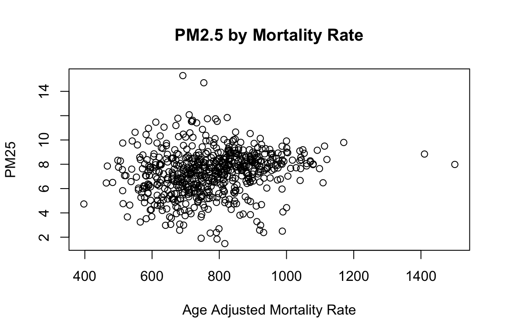
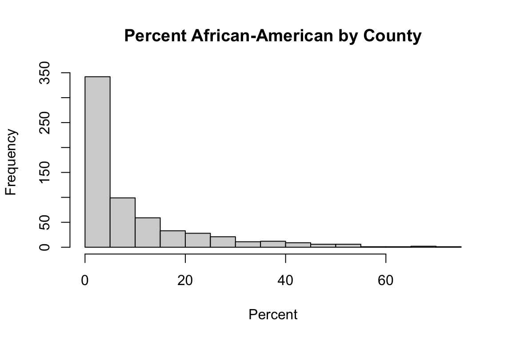

3.3 Database Integration: Air Quality, Mortality, and Environmental Justice Data
The development of this training module was led by Dr. Cavin Ward-Caviness.
Fall 2021
Disclaimer: The views expressed in this document are those of the author and do not necessarily reflect the views or policies of the U.S. EPA.
Introduction to Exposure and Health Databases used in this Module
In this R example we will use publicly available exposure and health databases to examine associations between air quality and mortality across the entire U.S. Specific databases that we will query include the following:
EPA Air Quality data: As an example air pollutant exposure dataset, 2016 annual average data from the EPA Air Quality System database will be analyzed, using data downloaded and organized from the following website: https://aqs.epa.gov/aqsweb/airdata/annual_conc_by_monitor_2016.zip
CDC Health Outcome data: As an example health outcome dataset, the 2016 CDC Underlying Cause of Death dataset, from the WONDER (Wide-ranging ONline Data for Epidemiologic Research) website will be analyzed, using All-Cause Mortality Rates downloaded and organized from the following website: https://wonder.cdc.gov/ucd-icd10.html
Human covariate data: The potential influence of covariates (e.g., race) and other confounders will be analyzed using data downloaded and organized from the following 2016 county-level resource: https://www.countyhealthrankings.org/explore-health-rankings/rankings-data-documentation/national-data-documentation-2010-2019
Introduction to Training Module
This training module provides an example analysis based on the integration of data across multiple environmental health databases. This module specifically guides trainees through an explanation of how the data were downloaded and organized, and then details the loading of required packages and datasets. Then, this module provides code for visualizing county-level air pollution measures obtained through U.S. EPA monitoring stations throughout the U.S. Air pollution measures include PM2.5, NO2, and SO2, are visualized here as the yearly average. Air pollution concentrations are then evaluated for potential relationship to the health outcome, mortality. Specifically, age adjusted mortality rates are organized and statistically related to PM2.5 concentrations through linear regression modeling. Crude statistical models are first provided that do not take into account the influence of potential confounders. Then, statistical models are used that adjust for potential confounders, including adult smoking rates, obesity, food environment indicators, physical activity, employment status, rural vs urban living percentages, sex, ethnicity, and race. Results from these models point to the finding that areas with higher percentages of African-Americans may be experiencing higher impacts from PM2.5 on mortality. This relationship is of high interest, as it represents a potential Environmental Justice issue.
Training Module’s Environmental Health Questions:
This training module was specifically developed to answer the following environmental health questions:
- What areas of the U.S. are most heavily monitored for air quality?
- Is there an association between long-term, ambient PM2.5 concentrations and mortality at the county level? Stated another way we are asking: Do counties with higher annual average PM2.5 concentrations also have higher all-cause mortality rates?
- What is the difference when running crude statistical models vs. statistical models that adjust for potential confounding, when evaluating the relationship between PM2.5 and mortality?
- Do observed associations differ when comparing between counties with a higher vs. lower percentage of African-Americans which can indicate environmental justice concerns?
Installing required R packages
If you already have these packages installed, you can skip this step, or you can run the below code which checks installation status for you:
if (!requireNamespace("sf"))
install.packages("sf");
if (!requireNamespace("dplyr"))
install.packages("dplyr");
if (!requireNamespace("tidyr"))
install.packages("tidyr");
if (!requireNamespace("ggplot2"))
install.packages("ggplot2");
if (!requireNamespace("ggthemes"))
install.packages("ggthemes");Loading R packages required for this session
library(sf)
library(dplyr)
library(tidyr)
library(ggplot2)
library(ggthemes)Loading Example Datasets
Let’s start by loading the datasets needed for this training module. As detailed in the introduction, these data were previously downloaded and organized, and specifically made available for this training excercise as a compiled RDataset, containing organized dataframes ready to analyze.
We can now read in these organized data using the ‘load’ function:
load("Module3_3/Module3_3_Data_AirQuality_Mortality_EJ.RData")Data Viewing & Plotting
The air pollution data has already been aggregated to the county level so let’s plot it and see what it looks like.
First let’s take a look at the data, starting with the county-level shapefile:
head(counties_shapefile)## Simple feature collection with 6 features and 9 fields
## Geometry type: MULTIPOLYGON
## Dimension: XY
## Bounding box: xmin: -102 ymin: 37.39 xmax: -84.8 ymax: 43.5
## Geodetic CRS: NAD83
## STATEFP COUNTYFP COUNTYNS AFFGEOID GEOID NAME LSAD ALAND
## 1 19 107 00465242 0500000US19107 19107 Keokuk 06 1.500e+09
## 2 19 189 00465283 0500000US19189 19189 Winnebago 06 1.037e+09
## 3 20 093 00485011 0500000US20093 20093 Kearny 06 2.255e+09
## 4 20 123 00485026 0500000US20123 20123 Mitchell 06 1.818e+09
## 5 20 187 00485055 0500000US20187 20187 Stanton 06 1.762e+09
## 6 21 005 00516849 0500000US21005 21005 Anderson 06 5.227e+08
## AWATER geometry
## 1 1929323 MULTIPOLYGON (((-92.41 41.5...
## 2 3182052 MULTIPOLYGON (((-93.97 43.5...
## 3 1133601 MULTIPOLYGON (((-101.5 37.9...
## 4 44979981 MULTIPOLYGON (((-98.49 39.2...
## 5 178555 MULTIPOLYGON (((-102 37.54,...
## 6 6311537 MULTIPOLYGON (((-85.17 38, ...This dataframe contains the location information for the counties which we will use for visualizations.
Now let’s view the EPA Air Quality Survey (AQS) data collected from 2016:
head(epa_ap_county)## State.Code State.Name County.Code County.Name State_County_Code
## 1 1 Alabama 3 Baldwin 1003
## 2 1 Alabama 27 Clay 1027
## 3 1 Alabama 33 Colbert 1033
## 4 1 Alabama 49 DeKalb 1049
## 5 1 Alabama 55 Etowah 1055
## 6 1 Alabama 69 Houston 1069
## Parameter.Name Units.of.Measure County_Avg
## 1 PM25 Micrograms/cubic meter (LC) 7.226
## 2 PM25 Micrograms/cubic meter (LC) 7.364
## 3 PM25 Micrograms/cubic meter (LC) 7.492
## 4 PM25 Micrograms/cubic meter (LC) 7.696
## 5 PM25 Micrograms/cubic meter (LC) 8.196
## 6 PM25 Micrograms/cubic meter (LC) 7.062This dataframe represents county-level air quality measures, collected through the Air Quality Survey (2016), as detailed above. This dataframe is in melted (or long) format, meaning that different air quality measures are organized across rows, with variable measure indicators in the ‘Parameter.Name’, ‘Units.of.Measure’, and ‘County_Avg’ columns.
These data can be restructured to view air quality measures as separate variables labeled across columns using:
# transform from the "long" to "wide" format for the pollutants
epa_ap_county <- epa_ap_county %>% select(-Units.of.Measure) %>% unique() %>% tidyr::spread(Parameter.Name, County_Avg)
head(epa_ap_county)## State.Code State.Name County.Code County.Name State_County_Code NO2 PM25 SO2
## 1 1 Alabama 3 Baldwin 1003 NA 7.226 NA
## 2 1 Alabama 27 Clay 1027 NA 7.364 NA
## 3 1 Alabama 33 Colbert 1033 NA 7.492 NA
## 4 1 Alabama 49 DeKalb 1049 NA 7.696 NA
## 5 1 Alabama 55 Etowah 1055 NA 8.196 NA
## 6 1 Alabama 69 Houston 1069 NA 7.062 NANote that we can now see the specific pollutant variables ‘NO2’, ‘PM25’, and ‘SO2’ on the far right.
Population-weighted vs Unweighted Exposures
Here we pause briefly to speak on population-weighted vs unweighted exposures. The analysis we will be undertaking is known as an “ecological” analysis where we are looking at associations by area, e.g. county. When studying environmental exposures by area a common practice is to try to weight the exposures by the population so that exposures better represent the “burden” faced by the population. Ideally for this you would want a systematic model or assessment of the exposure that corresponded with a fine-scale population estimate so that for each county you could weight exposures within different areas of the county by the population exposed. This sparse monitor data (we will examine the population covered later in the tutorial) is not population weighted, but should you see similar analyses with population weighting of exposures you should simply be aware that this better captures the “burden” of exposure experienced by the population within the area estimated, typically zip code or county.
Now let’s view the CDC’s mortality dataset collected from 2016:
head(cdc_mortality)## Notes County County.Code Deaths Population Crude.Rate
## 1 NA Autauga County, AL 1001 520 55416 938.36
## 2 NA Baldwin County, AL 1003 1974 208563 946.48
## 3 NA Barbour County, AL 1005 256 25965 985.94
## 4 NA Bibb County, AL 1007 239 22643 1055.51
## 5 NA Blount County, AL 1009 697 57704 1207.89
## 6 NA Bullock County, AL 1011 133 10362 1283.54
## Age.Adjusted.Rate Age.Adjusted.Rate.Standard.Error
## 1 884.4 39.46
## 2 716.9 16.58
## 3 800.7 51.09
## 4 927.7 61.03
## 5 989.4 38.35
## 6 1063.0 93.69We can create a visualization of values throughout the U.S. to further inform what these data look like:
# Can merge them by the FIPS county code which we need to create for the counties_shapefile
counties_shapefile$State_County_Code <- as.character(as.numeric(paste0(counties_shapefile$STATEFP, counties_shapefile$COUNTYFP)))
# Let's merge in the air pollution and mortality data and plot it
counties_shapefile <- merge(counties_shapefile, epa_ap_county, by.x="State_County_Code", by.y="State_County_Code", all.x=TRUE)
counties_shapefile <- merge(counties_shapefile, cdc_mortality, by.x="State_County_Code", by.y="County.Code")
# Will remove alaska and hawaii just so we can look at the continental USA
county_plot <- subset(counties_shapefile, !STATEFP %in% c("02","15"))
# We can start with a simple plot of age-adjusted mortality rate, PM2.5, NO2, and SO2 levels across the U.S.
plot(county_plot[,c("Age.Adjusted.Rate","PM25","NO2","SO2")])
You can see that these result in the generation of four different nation-wide plots, showing the distributions of age adjusted mortality rates, PM2.5 concentrations, NO2 concentrations, and SO2 concentrations, averaged per-county.
Let’s make a nicer looking plot with ggplot, looking just at PM2.5 levels:
# Using ggplot we can have more control
p <- ggplot(data=county_plot) +
geom_sf(aes(fill=PM25)) +
scale_fill_viridis_c(option="plasma", name="PM2.5",
guide = guide_colorbar(
direction = "horizontal",
barheight = unit(2, units = "mm"),
barwidth = unit(50, units = "mm"),
draw.ulim = F,
title.position = 'top',
# some shifting around
title.hjust = 0.5,
label.hjust = 0.5)) +
ggtitle("2016 Annual PM25 (EPA Monitors)") +
theme_map() +
theme(plot.title = element_text(hjust = 0.5, size=22))
p
With this, we can answer Environmental Health Question 1: What areas of the U.S. are most heavily monitored for air quality?
Answer: We can tell from the PM2.5 specific plot that air monitors are densely located in California, and other areas with high populations (including the East Coast), while large sections of central U.S. lack air monitoring data.
Analyzing Relationships between PM2.5 and Mortality
Now the primary question is whether counties with higher PM2.5 also have higher mortality rates. To answer this question, first we need to run some data merging in preparation for this analysis:
model_data <- merge(epa_ap_county, cdc_mortality, by.x="State_County_Code", by.y="County.Code")As we saw in the above plot, only a portion of the USA is covered by PM2.5 monitors. Let’s see what our population coverage is:
sum(model_data$Population, na.rm=TRUE)## [1] 232169063sum(cdc_mortality$Population, na.rm=TRUE)## [1] 323127513sum(model_data$Population, na.rm=TRUE)/sum(cdc_mortality$Population, na.rm=TRUE)*100## [1] 71.85We can do a quick visual inspection of this using a scatter plot which will also let us check for unexpected distributions of the data (always a good idea):
plot(model_data$Age.Adjusted.Rate, model_data$PM25, main="PM2.5 by Mortality Rate", xlab="Age Adjusted Mortality Rate", ylab="PM25")
The univariate correlation is a simple way of quantifying this potential relationships, though it does not nearly tell the complete story. Just as a starting point, let’s run this simple univariate correlation calculation using the ‘cor’ function:
cor(model_data$Age.Adjusted.Rate, model_data$PM25, use="complete.obs")## [1] 0.1785Regression Modeling
Now, let’s obtain a more complete estimate of the data through regression modeling. As an initial starting point, let’s run this model without any confounders (also known as a ‘crude’ model).
A simple linear regression model in R can be carried out using the ‘lm’ (linear model) function. Here, we are evaluating age adjusted mortality rate (age.adjusted.rate) as the dependent variable, and PM2.5 as the independent variable. Values used in evaluating this model were weighted to adjust for the fact that some counties have higher precision in their age adjusted mortality rate (represented by a smaller age adjusted rate standard error).
# Running the linear regression model
m <- lm(Age.Adjusted.Rate ~ PM25,
data = model_data, weights=1/model_data$Age.Adjusted.Rate.Standard.Error)
# Viewing the model results through the summary function
summary(m) ##
## Call:
## lm(formula = Age.Adjusted.Rate ~ PM25, data = model_data, weights = 1/model_data$Age.Adjusted.Rate.Standard.Error)
##
## Weighted Residuals:
## Min 1Q Median 3Q Max
## -110.10 -9.79 8.36 25.09 84.32
##
## Coefficients:
## Estimate Std. Error t value Pr(>|t|)
## (Intercept) 661.04 22.53 29.34 <2e-16 ***
## PM25 8.96 2.88 3.11 0.0019 **
## ---
## Signif. codes: 0 '***' 0.001 '**' 0.01 '*' 0.05 '.' 0.1 ' ' 1
##
## Residual standard error: 29.9 on 608 degrees of freedom
## (88 observations deleted due to missingness)
## Multiple R-squared: 0.0157, Adjusted R-squared: 0.0141
## F-statistic: 9.68 on 1 and 608 DF, p-value: 0.00195Shown here are summary level statistics summarizing the results of the linear regression model.
In the model summary we see several features. The “Estimate” column is the regression coefficient which tells us the relationship between a 1 ug/m3 change (elevation) in PM2.5 and the age-adjusted all-cause mortality rate. “Std. Error” is the standard error of the estimate. The column “t value” represents the T-statistic which is the test statistic for linear regression models and is simply the “Estimate” divied by “Std. Error”. This “t value” is compared with the Student’s T distribution in order to determine the p-value (“Pr(>|t|)”).
The residuals are the difference between the predicted outcome (age-adjusted mortality rate) and known outcome from the data. For linear regression to be valid this should be normally distributed. The residuals from a linear model can be extracted using the residuals() command and plotted to see their distribution.
With this, we can answer Environmental Health Question 2: Is there an association between long-term, ambient PM2.5 concentrations and mortality at the county level? Stated another way we are asking: Do counties with higher annual average PM2.5 concentrations also have higher all-cause mortality rates?
Answer: Based on these model results, there may indeed be an association between PM2.5 concentrations and mortality (p=0.0019).
To more thoroughly examine the potential relationship between PM2.5 concentrations and mortality it is absolutely essential to adjust for confounders.
# First we merge the covariate data in with the AQS data
model_data <- merge(model_data, county_health, by.x="State_County_Code", by.y="County.5.digit.FIPS.Code", all.x=TRUE)
# Now we add some relevant confounders to the linear regression model
m <- lm(Age.Adjusted.Rate ~ PM25 + Adult.smoking + Adult.obesity + Food.environment.index + Physical.inactivity +
High.school.graduation + Some.college + Unemployment + Violent.crime + Percent.Rural + Percent.Females +
Percent.Asian + Percent.Non.Hispanic.African.American + Percent.American.Indian.and.Alaskan.Native + Percent.NonHispanic.white,
data = model_data, weights=1/model_data$Age.Adjusted.Rate.Standard.Error)
# And finally we check to see if the statistical association persists
summary(m)##
## Call:
## lm(formula = Age.Adjusted.Rate ~ PM25 + Adult.smoking + Adult.obesity +
## Food.environment.index + Physical.inactivity + High.school.graduation +
## Some.college + Unemployment + Violent.crime + Percent.Rural +
## Percent.Females + Percent.Asian + Percent.Non.Hispanic.African.American +
## Percent.American.Indian.and.Alaskan.Native + Percent.NonHispanic.white,
## data = model_data, weights = 1/model_data$Age.Adjusted.Rate.Standard.Error)
##
## Weighted Residuals:
## Min 1Q Median 3Q Max
## -70.06 -7.05 0.96 8.12 64.05
##
## Coefficients:
## Estimate Std. Error t value
## (Intercept) 616.4798 157.2084 3.92
## PM25 3.8485 1.6932 2.27
## Adult.smoking 859.2734 137.8131 6.24
## Adult.obesity 605.8431 97.7195 6.20
## Food.environment.index -28.6554 3.9336 -7.28
## Physical.inactivity 117.6092 91.4152 1.29
## High.school.graduation 55.1445 40.7849 1.35
## Some.college -244.4126 49.7876 -4.91
## Unemployment 97.9816 161.8902 0.61
## Violent.crime 0.0755 0.0152 4.98
## Percent.Rural -12.5531 20.8483 -0.60
## Percent.Females -271.4550 299.1693 -0.91
## Percent.Asian 74.5433 55.8926 1.33
## Percent.Non.Hispanic.African.American 153.3991 39.4962 3.88
## Percent.American.Indian.and.Alaskan.Native 200.7001 102.7503 1.95
## Percent.NonHispanic.white 240.1798 26.3054 9.13
## Pr(>|t|)
## (Intercept) 1.0e-04 ***
## PM25 0.02344 *
## Adult.smoking 9.4e-10 ***
## Adult.obesity 1.2e-09 ***
## Food.environment.index 1.2e-12 ***
## Physical.inactivity 0.19883
## High.school.graduation 0.17694
## Some.college 1.2e-06 ***
## Unemployment 0.54529
## Violent.crime 8.6e-07 ***
## Percent.Rural 0.54736
## Percent.Females 0.36464
## Percent.Asian 0.18290
## Percent.Non.Hispanic.African.American 0.00012 ***
## Percent.American.Indian.and.Alaskan.Native 0.05133 .
## Percent.NonHispanic.white < 2e-16 ***
## ---
## Signif. codes: 0 '***' 0.001 '**' 0.01 '*' 0.05 '.' 0.1 ' ' 1
##
## Residual standard error: 14.2 on 514 degrees of freedom
## (168 observations deleted due to missingness)
## Multiple R-squared: 0.784, Adjusted R-squared: 0.778
## F-statistic: 124 on 15 and 514 DF, p-value: <2e-16With this, we can answer Environmental Health Question 3: What is the difference when running crude statistical models vs statistical models that adjust for potential confounding, when evaluating the relationship between PM2.5 and mortality?
Answer: The relationship between PM2.5 and mortality remains statistically significant when confounders are considered (p=0.023), though is not as significant as when running the crude model (p=0.0019).
Environmental Justice Considerations
Environmental Justice is the study of how societal inequities manifest in differences in environmental health risks either due to greater exposures or a worse health response to exposures. Racism and racial discrimination are major factors in both how much pollution people are exposed to as well what their responses might be due to other co-existing inequities (e.g. poverty, access to healthcare, food deserts). Race is a commonly used proxy for experiences of racism and racial discrimination.
Here we will consider the race category of ‘Non-Hispanic African-American’ to investigate if pollution levels differ by percent African-Americans in a county and if associations between PM2.5 and mortality also differ by this variable, which could indicate Environmental Justice-relevant issues revealed by this data. We will specifically evaluate data distributions across counties with the highest percentage of African-Americans (top 25%) vs lowest percentage of African-Americans (bottom 25%).
First let’s visualize the distribution of % African-Americans in these data:
hist(model_data$Percent.Non.Hispanic.African.American*100, main="Percent African-American by County",xlab="Percent")
And let’s look at a summary of the data:
summary(model_data$Percent.Non.Hispanic.African.American)## Min. 1st Qu. Median Mean 3rd Qu. Max. NA's
## 0.00 0.01 0.04 0.09 0.12 0.70 67We can compute quartiles of the data:
model_data$AA_quartile <- with(model_data, cut(Percent.Non.Hispanic.African.American,
breaks=quantile(Percent.Non.Hispanic.African.American, probs=seq(0,1, by=0.25), na.rm=TRUE),
include.lowest=TRUE, ordered_result=TRUE, labels=FALSE))Then we can use these quartiles to see that as the Percent African-American increases so does the PM2.5 exposure by county:
AA_summary <- model_data %>% filter(!is.na(Percent.Non.Hispanic.African.American)) %>% group_by(AA_quartile) %>% summarise(Percent_AA = mean(Percent.Non.Hispanic.African.American, na.rm=TRUE), Mean_PM25 = mean(PM25, na.rm=TRUE))
AA_summary## # A tibble: 4 × 3
## AA_quartile Percent_AA Mean_PM25
## <int> <dbl> <dbl>
## 1 1 0.00671 5.97
## 2 2 0.0238 7.03
## 3 3 0.0766 7.93
## 4 4 0.269 8.05Now that we can see this trend, let’s add some statistics. Let’s specifically compare the relationships between PM2.5 and mortality within the bottom 25% AA counties (quartile 1); and also the highest 25% AA counties (quartile 4):
# First need to subset the data by these quartiles of interest
low_AA <- subset(model_data, AA_quartile==1)
high_AA <- subset(model_data, AA_quartile==4)
# Then we can run the relevant statistical models
m.low <- lm(Age.Adjusted.Rate ~ PM25 + Adult.smoking + Adult.obesity + Food.environment.index + Physical.inactivity +
High.school.graduation + Some.college + Unemployment + Violent.crime + Percent.Rural + Percent.Females +
Percent.Asian + Percent.American.Indian.and.Alaskan.Native + Percent.NonHispanic.white,
data = low_AA, weights=1/low_AA$Age.Adjusted.Rate.Standard.Error)
m.high <- lm(Age.Adjusted.Rate ~ PM25 + Adult.smoking + Adult.obesity + Food.environment.index + Physical.inactivity +
High.school.graduation + Some.college + Unemployment + Violent.crime + Percent.Rural + Percent.Females +
Percent.Asian + Percent.American.Indian.and.Alaskan.Native + Percent.NonHispanic.white,
data = high_AA, weights=1/high_AA$Age.Adjusted.Rate.Standard.Error)
# We see a striking difference in the associations
rbind(c("Bottom 25% AA Counties",round(summary(m.low)$coefficients["PM25",c(1,2,4)],3)),
c("Top 25% AA Counties",round(summary(m.high)$coefficients["PM25",c(1,2,4)],3)))## Estimate Std. Error Pr(>|t|)
## [1,] "Bottom 25% AA Counties" "4.782" "3.895" "0.222"
## [2,] "Top 25% AA Counties" "14.552" "4.13" "0.001"With this, we can answer Environmental Health Question 4: Do observed associations differ when comparing between counties with a higher vs. lower percentage of African-Americans which can indicate environmental justice concerns?
Answer: Yes. Counties with the highest percentage of African-Americans (top 25%) demonstrated a highly significant association between PM2.5 and age adjusted mortality, even when adjusting for confounders (p=0.001), meaning that the association between PM2.5 and mortality within these counties may be exacerbated by factors relevant to race. Conversely, counties with the lowest percentages of African-Americans (bottom 25%) did not demonstrate a significant association between PM2.5 and age adjusted mortality, indicating that these counties may have lower environmental health risks due to factors correlated with race.
Concluding Remarks
In conclusion, this training module serves as a novel example data integration effort of high relevance to environmental health issues. Databases that were evaluated here span exposure data (i.e., Air Quality System data), health outcome data (i.e., mortality data), and county-level characteristics on healthcare, food environment, and other potentially relevant confounders (i.e., county-level variables that may impact observed relationships), and environmental justice data (e.g., race). Many different visualization and statistical approaches were used, largely based on linear regression modeling and county-level characteristic stratifications. These example statistics clearly support the now-established relationship between PM2.5 concentrations in the air and mortality. Importantly, these related methods can be tailored to address new questions to increase our understanding between exposures to chemicals in the environment and adverse health outcomes, as well as the impact of different individual or area charateristics on these relationships - particularly those that might relate to environmental justice concerns.